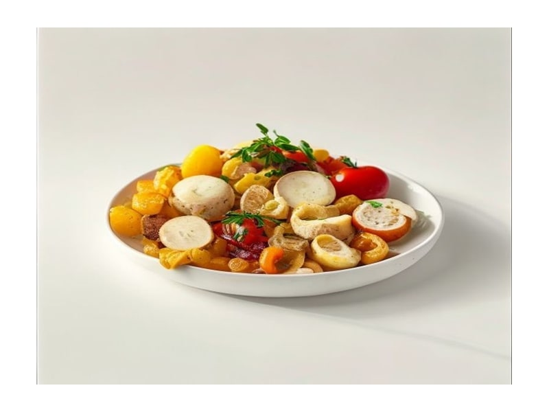

Warzywa
Pieczarki marynowane
Pieczarki marynowane: 1.5 g białka, 22 kcal, 3 g węglowodanów i 0.5 g tłuszczu na 100 g. Kategoria: Warzywa.
Kalorie22 kcalna 100 g
Białko / proteiny1.5 g
Węglowodany3 g
Tłuszcz0.5 g
Cena (szac.)~0,85 złza 100 g
Ceny zaktualizowano: maj 2026 (szacunek — ceny w popularnych supermarketach)
Porcja: porcja (100g)
| Kalorie | 22 kcal |
|---|---|
| Białko | 1.5 g |
| Węglowodany | 3 g |
| Tłuszcz | 0.5 g |
| Cena (szac.) | ~0,85 zł |
Szczegółowe składniki odżywcze na 100 g
| Wartość energetyczna (kalorie) | 22 kcal |
|---|---|
| Białko (proteiny) | 1.5 g |
| Węglowodany | 3 g |
| Tłuszcz | 0.5 g |
| Tłuszcze nasycone | 0.1 g |
| Tłuszcze nienasycone | 0.4 g |
| Witaminy i minerały | Selen, Witamina C, Kwas foliowy |
| Współczynnik kcal / 1 g białka | 14.7 |
| Cena produktu (szac. za 100 g) | ~0,85 zł |
| Cena za 100 g białka (szac.) | ~56,67 zł |